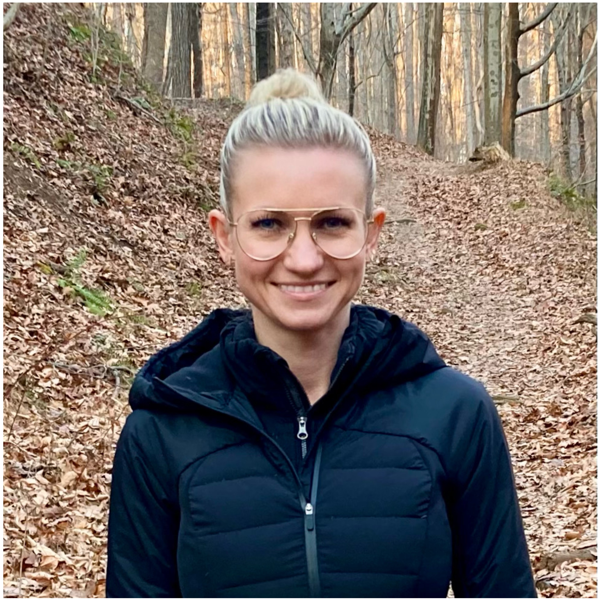

Let me tell you about myself: I was born in Russia, and I moved to United States 18 year ago. I graduated university there and got major in translation and interpretation. Currently, I am working in medical office as ophthalmologist assistant. My major is Information Technology – I was always interested in computers as technology is growing rapidly.
